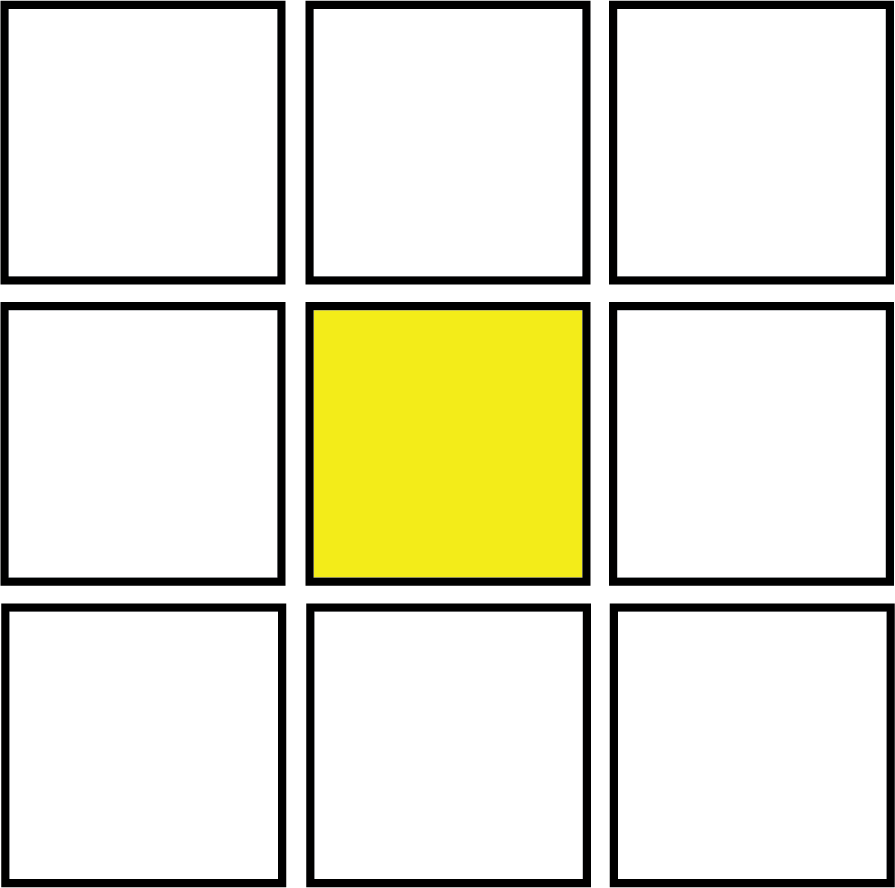
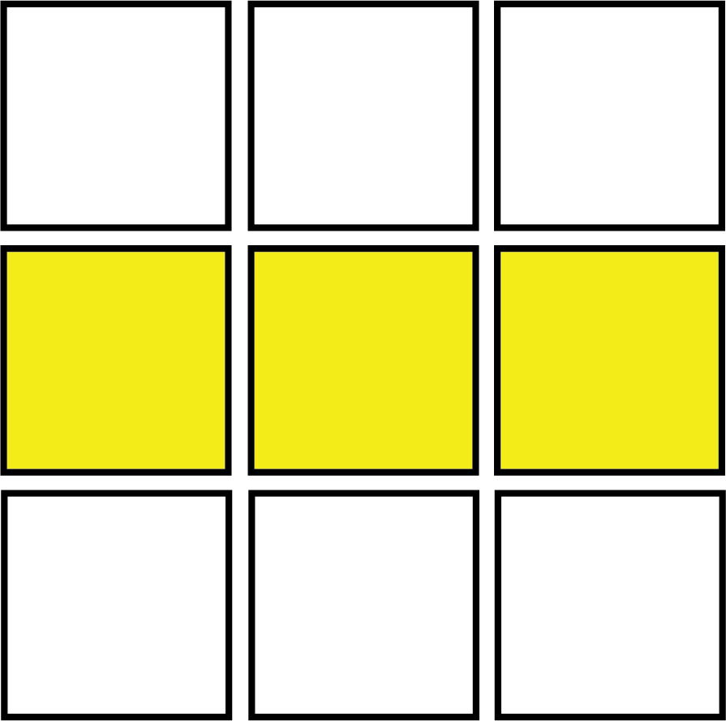
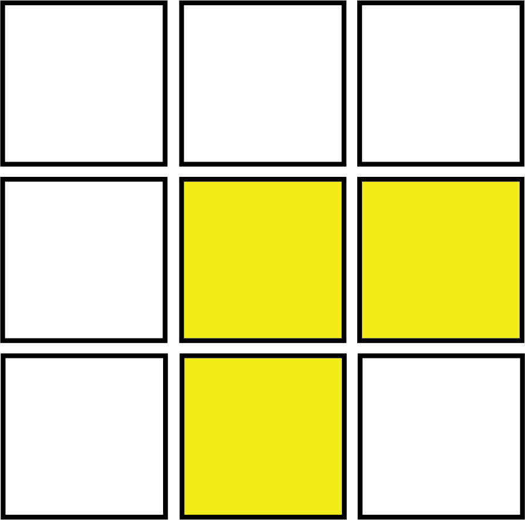

By now we have solved two bottom layers and only the last layer is left. The goal of this step is straightfoward but achieving it is much less intuitive than the other steps. For this step, we need to form a cross on the yellow side. It doesn't matter if the edge pieces don't match the color of the side center pieces, as we will switch them later
I'm sure you are already a bit intimidated by the Last Layer (TM), as now it is nearly impossible to turn the cube without messing anything up, and also there still appears to be 4 steps left, out of 7 total steps. This is where following the algorithms becomes much more important. Be sure to follow the algorithms very carefully, as a mistake can force you to start over again. While it the last layer isn't actually very long, it is the least intuitive part of solving the Rubik's Cube, and many people get stuck on these steps. This is why most guides on the beginner method (like this one) will break it up into 4 steps, sometimes using 2-look OLL and PLL, which are the most useful for speed-cubing. The yellow cross is the first step in 2-look OLL.
There are 3 algorithms for this step, one for each case. (There actually are 4 cases, with the fourth one being a solved cross, in which case, you can skip this step) You can choose to learn any amount of them, as only knowing 1 can still solve this step, given that you do it up to 3 times. When doing this step, remember to only look at the yellow edge orientation, the other colours are not important.
Notice how all the algorithms are very simliar and share the part in brackets (the 'trigger'). This is intended to make it easier to remember, and is also why doing one algorithm over and over and turning to match one of the cases after will still solve the step by cycling through the positions. You might need to turn the top layer (or the entire cube) to match one of these cases.
F (R U R' U') F' f (R U R' U') f' F (R U R' U') F' f (R U R' U') f' or [U2] F U R U' R' F'
For the last case, the U2 in square brackets mean that if you are going to use the second type of algorithm, you should recongonize and solve it as a '_|" shape instead of a '|-' shape as it is shown.
Choose only one algorithm to learn for case 3, learning both will not help you. Learning the first algorithm means that you don't need to seprately remember the step, as it is already in the algorithm of the first case.